Искатели скрытой проводки
Схема №1
Для обнаружения скрытой электропроводки в большинстве случаев вполне достаточно простейшего устройства, состоящего из полевого транзистора, головного телефона и одного-трех элементов питания (рис. 1). Принцип действия устройства основав на свойстве полевого транзистора изменять свое сопротивление под действием наводок на выводе затвора. Транзистор VT1 - типа КП103, КП303 с любым буквенным индексом (у последнего вывод корпуса соединяют с выводом затвора). Телефон BF1 - высокоомный, сопротивлением 1600...2200 Ом. Полярность подключения батареи питания GB1 роли не играет.
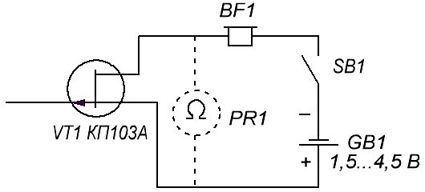
При поиске скрытой проводки корпусом транзистора водят по стене и по максимальной громкости звука частотой 50 Гц (если это электропроводка) или радиопередачи (радиотрансляционная сеть) определяют место прокладки проводов. Индикатором может служить не только головной телефон, но и омметр (изображен штриховыми линиями) или авометр, включенный в этот режим работы. Источник питания GB1 и телефон BF1 в этом случае не нужны.
Схема №2
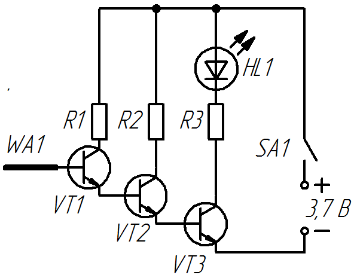
Таблица 1
| Обозначение | Наименование | Номинал | Количество | Примечание |
|---|---|---|---|---|
| HL1 | Светодиод | АЛ307 | 1 | |
| GB1 | Батарейка | 9 В | 1 | «Крона» |
| R1 | Резистор | 1 МОм | 1 | |
| R2 | Резистор | 100 кОм | 1 | |
| R3 | Резистор | 220 Ом | 1 | |
| SA1 | Выключатель | 1 | ||
| VT1-VT3 | Биполярный транзистор | 2N3904 | 3 | BC547, КТ3102, КТ315 |
| WA1 | Антенна | 10-15 см медной проволоки | 1 |
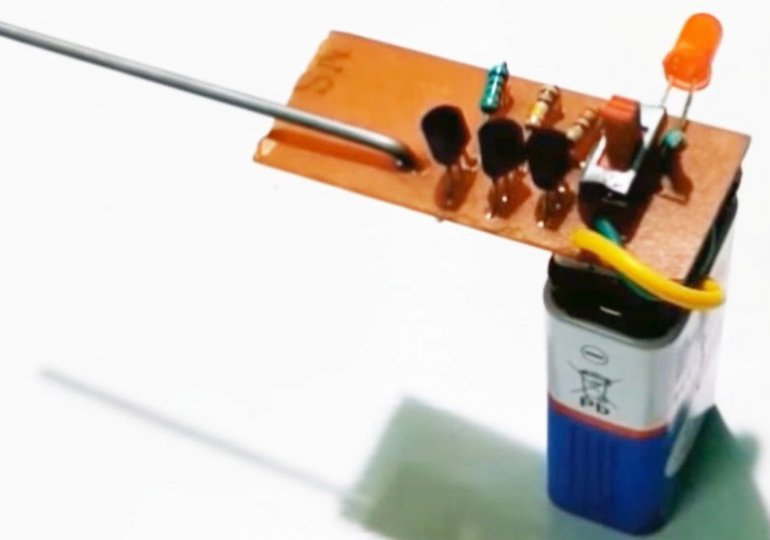
Для проверки работоспособности прибором проводим по линии размещения провода (например, от выключателя идет скрытая проводка вверх), светодиод горит. Если прибор отвести в сторону, то светодиод гаснет.
Схема №3
Эта схема похожа на предыдущую, но отличается конструкцией антенны.
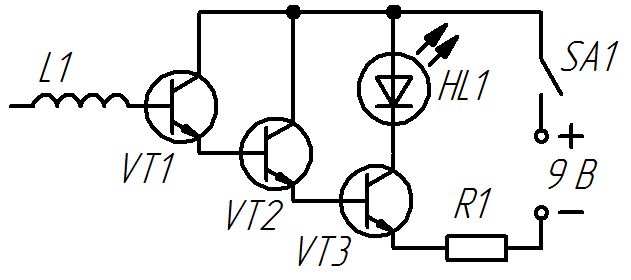
Таблица 2
| Обозначение | Наименование | Номинал | Кол-во | Примечание |
|---|---|---|---|---|
| GB1 | Батарея питания | 9 В | 1 | 6F22 "Крона" |
| HL1 | Светодиод | АЛ307 | 1 | |
| L | Антенна | |||
| R1 | Резистор постоянный | 1 кОм/0,25 Вт | 1 | |
| SA1 | Выключатель | 1 | ||
| VT1-VT3 | Транзистор биполярный | С945 | 1 | 2SC3198, 2SC1815, KSC1815, KSC945C, KTC3198, C1815 |
Для антенны потребуется отрезок медной проволоки диаметром 0,5 мм длиной примерно 30 см. Этот кусочек проволоки наматывается на стержень круглого сечения диаметром около 4 мм.
Схема №4
Определить место прохождения скрытой электрической проводки в стенах помещения поможет сравнительно простой прибор, выполненный на трех транзисторах. На двух биполярных транзисторах (VT1, VT3) собран мультивибратор, а на полевом (VT2) - электронный ключ.
Принцип действия искателя основан на том, что вокруг электрического провода образуется электрическое поле - его и улавливает искатель.Если нажата кнопка выключателя SB1, но электрического поля в зоне антенного щупа WA1 нет либо искатель находится далеко от сетевых проводов, транзистор VT2 открыт, мультивибратор не работает, светодиод HL1 погашен.
Достаточно приблизить антенный щуп, соединенный с цепью затвора полевого транзистора, к проводнику с током либо просто к сетевому проводу, транзистор VT2 закроется, шунтирование базовой цепи транзистора VT3 прекратиться и мультивибратор начнет работать. Начнет вспыхивать светодиод. Перемещая антенный щуп вблизи стены, нетрудно проследить за пролеганием в ней сетевых проводов.
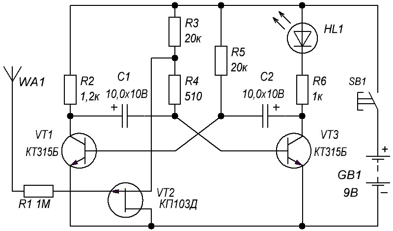
Таблица 3
| Обозначение | Наименование | Номинал | Кол-во | Примечание |
|---|---|---|---|---|
| GB1 | Батарея «Крона» | 9 В | 1 | |
| C1, C2 | Конденсатор электролитический | 10 мкФ×10В | 2 | |
| HL1 | Светодиод | АЛ307 | 1 | |
| R1 | Резистор постоянный | 1 МОм | 1 | мощность 0,125-0,25 Вт |
| R2 | Резистор постоянный | 1,2 кОм | 1 | мощность 0,125-0,25 Вт |
| R3, R5 | Резистор постоянный | 20 кОм | 2 | мощность 0,125-0,25 Вт |
| R4 | Резистор постоянный | 510 Ом | 1 | мощность 0,125-0,25 Вт |
| R6 | Резистор постоянный | 1 кОм | 1 | мощность 0,125-0,25 Вт |
| SB1 | Выключатель кнопочный | КМ-1 | 1 | |
| VT1,VT3 | Транзистор биполярный. | КТ315 | 2 | С любым буквенным индексом. |
| VT2 | Транзистор полевой. | КП103 | 1 | С любым буквенным индексом |
Антенный щуп представляет собой конический пластмассовый колпачок, внутри которого находится металлический стержень с резьбой. Стержень крепят к корпусу гайками, изнутри корпуса надевают на стержень металлический лепесток, который соединяют гибким монтажным проводником с резистором R1 на плате.
Антенный щуп может быть иной конструкции, например в виде петли из отрезка толстого (5 мм) высоковольтного провода, используемого в телевизоре. Длина отрезка 80...100 мм, его концы пропускают через отверстия в верхнем отсеке корпуса и припаивают к соответствующей точке платы.
Желаемую частоту колебаний мультивибратора, а значит, частоту вспышек светодиода можно установить подбором резисторов R3, R5 либо конденсаторов C1, C2. Для этого нужно временно отключить от резисторов R3 и R4 вывод истока полевого транзистора и замкнуть контакты выключателя.
Схема №5
Искатель может быть собран с использованием биполярных транзисторов разной структуры - на них выполнен генератор (рис. 6). Полевой транзистор (VT2) управляет работой генератора при попадании антенного щупа WA1 в электрическое поле сетевого провода.
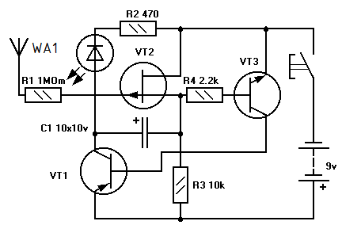
Таблица 4
| Обозначение | Наименование | Номинал | Кол-во | Примечание |
|---|---|---|---|---|
| GB1 | Батарея «Крона» | 9 В | 1 | |
| C1 | Конденсатор электролитический | 10 мкФ×16В | 1 | 5…10 мкФ |
| HL1 | Светодиод | АЛ307 | 1 | |
| R1 | Резистор постоянный | 1 МОм | 1 | 50 кОм ... 1,2 МОм, мощность 0,125-0,25 Вт |
| R2 | Резистор постоянный | 470 Ом | 1 | 150-560 Ом, мощность 0,125-0,25 Вт |
| R3 | Резистор постоянный | 10 кОм | 1 | мощность 0,125-0,25 Вт |
| SB1 | Выключатель кнопочный | КМ-1 | 1 | |
| VT1 | Транзистор биполярный | KT209 | 1 | КТ361. С любым буквенным индексом. |
| VT2 | Транзистор полевой | КП103 | 1 | С любым буквенным индексом |
| VT3 | Транзистор биполярный | КТ315 | 1 | КТ503, КТ3102. С любым буквенным индексом |
Антенна из проволоки длиной 80…100 мм.
Схема №6
Элементы микросхемы здесь используются в качестве усилителей. Элемент DD1.1 усиливает электромагнитное поле, «пойманное» антенной WA1 (наводки от сети), потом усиленный сигнал поступает на элемент DD1.2 и кварц Q1, которые включены по мостовой схеме для увеличения громкости звука.
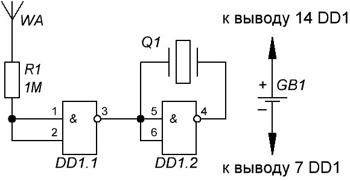
Таблица 5
| Обозначение | Наименование | Номинал | Кол-во | Примечание |
|---|---|---|---|---|
| GB1 | Батарея «Крона» | 9 В | 1 | |
| DD1 | Микросхема К176ЛА7 | 1 | К561ЛА7, К176ЛЕ5, К561ЛЕ5 | |
| R1 | Резистор постоянный | 1 МОм | 1 | |
| Q1 | Пьезоизлучатель пассивный | 1 | ||
| VT2 | Транзистор полевой | КП103 | 1 | С любым буквенным индексом |
| WA1 | Антенна – провод не менее 5 см | 1 | провод длиной не менее 5 см |
Схема №7
Основой данного детектора скрытой проводки является полевой транзистор КП103Ж, к затвору которого подключена антенна. Антенной служит отрезок медного провода или небольшая металлическая пластинка. Её можно закрепить на корпусе детектора, на одной из боковых стенок искателя скрытой проводки.
Как только затвор транзистор VT1 будет расположен вблизи с проводами, понизится сопротивление на цепи сток-исток. В итоге будут открываться остальные транзисторы, включится светодиод, оповещающий об обнаружении проводки.
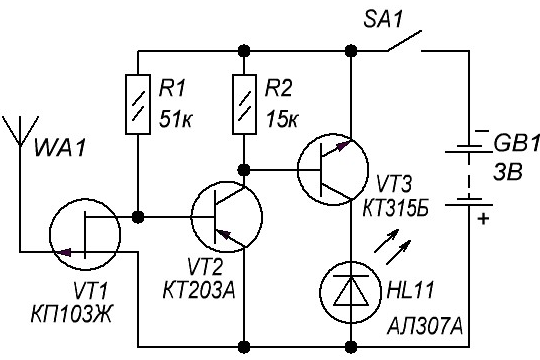
Таблица 6
| Обозначение | Наименование | Номинал | Кол-во | Примечание |
|---|---|---|---|---|
| GB1 | Батарея питания | 3 В | 1 | Батарея из двух элементов по 1,5 В |
| HL1 | Светодиод | АЛ307 | 1 | |
| R1 | Резистор постоянный | 51 кОм | 1 | Мощность 0,125-0,25 Вт |
| R2 | Резистор постоянный | 15 кОм | 1 | Мощность 0,125-0,25 Вт |
| SA1 | Выключатель кнопочный | КМ-1 | 1 | |
| VT1 | Транзистор полевой. | КП103 | 1 | С любым буквенным индексом |
| VT2 | Транзистор биполярный. | КТ203 | 1 | С любым буквенным индексом. Замена - КТ209, КТ361 |
| VT3 | Транзистор биполярный. | КТ315 | 1 | С любым буквенным индексом. Замена - КТ3102 |
| WA1 | Антенна | 1 |
Полевой транзистор КП103 и светодиод АЛ307 могут быть заменены аналогичными изделиями. Транзисторы необходимо выбирать с высоким коэффициент передачи. Устанавливая КП103, проследите за тем, чтобы он был расположен горизонтально. Затвор компонента нужно загнуть так, чтобы он находился выше корпуса элемента.
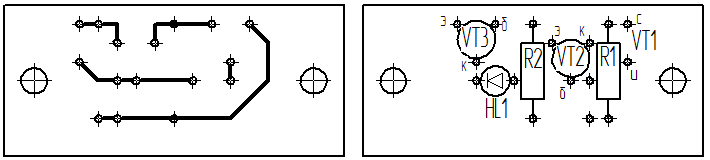
Схема №8
Чувствительным элементом схемы является полевой транзистор КП103, к затвору которого подключается антенна. Прибор реагирует на провода под напряжением 220 В 50 Гц независимо от того, течёт по ним ток, или нет. Светодиод на схеме загорается тогда, когда антенна оказывается в непосредственной близости от провода под напряжением.
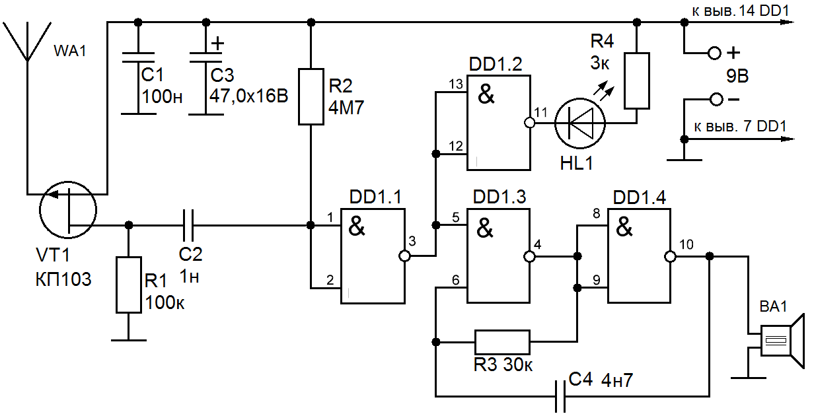
Микросхема К561ЛА7 представляет собой 4 логических элемента 2И-НЕ. Её можно заменить импортным аналогом CD4011. В качестве антенны можно использовать отрезок обычного тонкого провода, длиной 5-10 см. Чем больше его длина, тем больше чувствительность прибора.
Схема потребляет примерно 10-15 мА, питается напряжением 9 В. Для питания подойдёт обычная батарейка "Крона".
Таблица 7
| Обозначение | Наименование | Номинал | Количество | Примечание |
|---|---|---|---|---|
| BA1 | Пьезокерамический излучатель | ЗП-3 | 1 | |
| DD1 | Микросхема | К561ЛА7 | 1 | CD4011 |
| HL1 | Светодиод | АЛ307 | 1 | |
| С1 | Конденсатор | 0,1 мкФ | 1 | |
| С2 | Конденсатор | 1 нФ | 1 | |
| С3 | Конденсатор | 47 мкФ / 16 В | 1 | |
| С4 | Конденсатор | 4,7 нФ | 1 | |
| R1 | Резистор постоянный | 100 кОм | 1 | |
| R2 | Резистор постоянный | 4,7 МОм | 1 | |
| R3 | Резистор постоянный | 30 кОм | 1 | |
| R4 | Резистор постоянный | 3 кОм | 1 | |
| SA1 | Выключатель | 1 | ||
| VT1 | Транзистор полевой | КП103 | 1 | |
| WA1 | Антенна | 1 | 10-15 см медной проволоки |
Следует быть осторожным, обращаясь с микросхемой – она чувствительна к статике и её легко можно повредить. Поэтому на плату запаиваем панельку под микросхему и помещаем в неё микросхему только после завершения сборки.
Если транзистор в пластиковом корпусе, то на плату запаиваются только две ножки – сток и исток, и антенна припаивается непосредственно к затвору. Если корпус металлический, все три ножки запаиваются на плату вместе с антенной.
Для проверки схемы батарею "Крона" подключаем к плате, поставив в разрыв одного из проводов миллиамперметр. Потребление схемы должно составлять 10-15 мА. Если ток норме, можно поднести антенну детектора к любому сетевому проводу и наблюдать, как будет загораться светодиод и пищать пьезоизлучатель.
Дальность обнаружения проводки составляет примерно 3-5 см, в зависимости от длины антенны. При этом не следует прикасаться к антенне, от этого заметно падает чувствительность. Прибор не требует никакой настройки и начинает работать сразу после подачи питания. Помимо сетевых проводов, он реагирует также на кабель витую пару.
Схема №9
Данный прибор предназначен для обнаружения повреждений скрытой электропроводки. На один из проводов скрытой электропроводки подается переменное напряжение 12 В от понижающего трансформатора. Остальные провода заземляют. Приспособление включается и перемещается параллельно поверхности стены на расстоянии 5—40 мм. В местах обрыва или окончания провода индикатор приспособления гаснет. Приспособление может быть также использовано для обнаружения повреждений жил в гибких переносных и шланговых кабелях. Прибор питается от автономного источника напряжением 9 В.
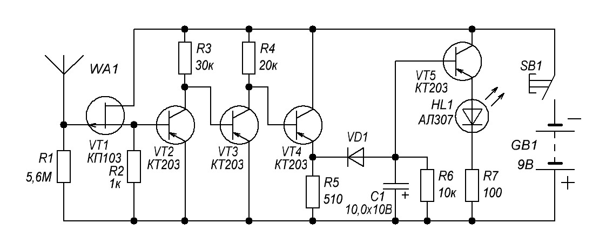
Источники:
usamodelkina.ru - Простейший детектор скрытой проводки своими руками
radioskot.ru - Прибор для поиска проводки
sdelaysam-svoimirukami.ru - Детектор скрытой проводки
usamodelkina.ru - Детектор скрытой проводки за 5 минут
sdelaysam-svoimirukami.ru - Простой детектор скрытой проводки своими руками
220.guru - Как самостоятельно создать детектор для обнаружения скрытой проводки